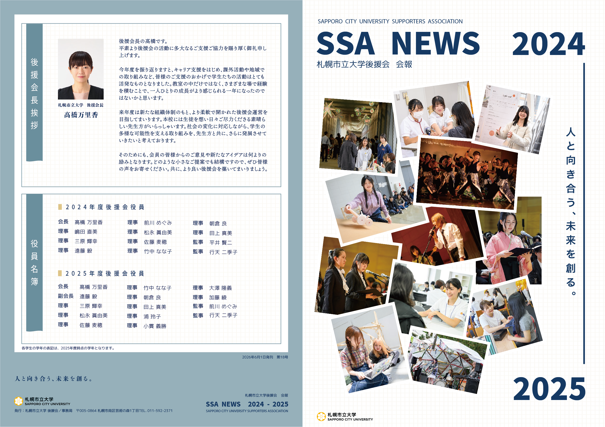
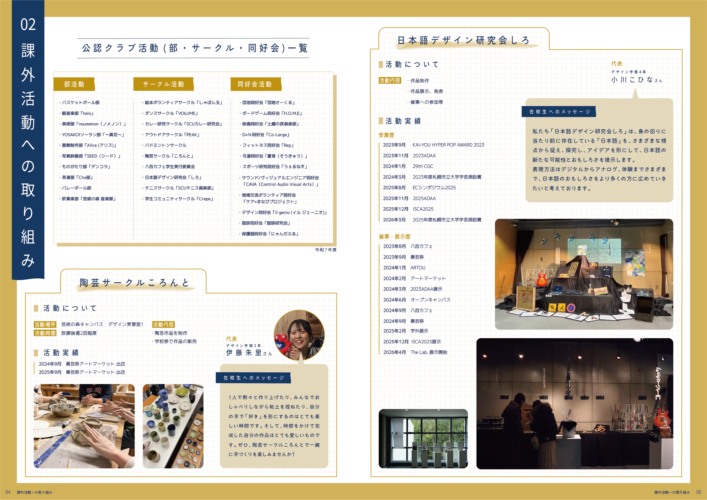
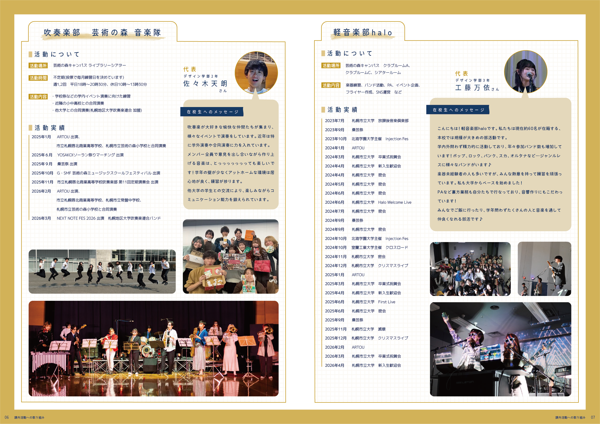
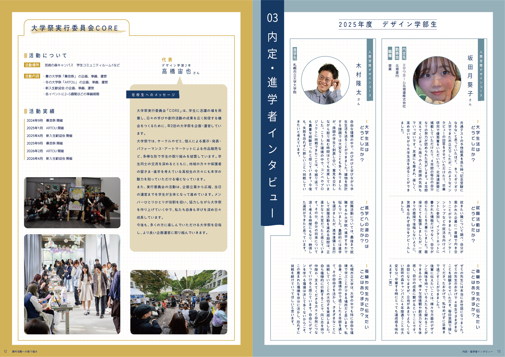
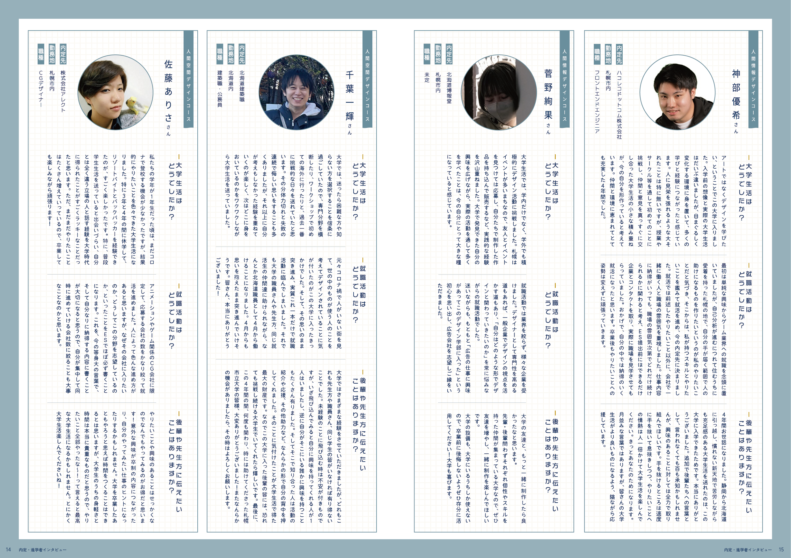
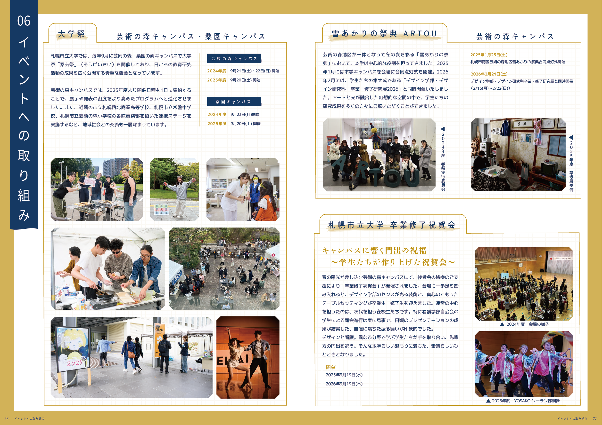

冊子・パンフレット制作
札幌市立大学 2024-2025 後援会報
情報を、共感へ変えるデザイン。
本誌では、学生インタビューや課外活動、大学の取り組みなど、多岐にわたる情報を掲載しています。
誌面設計にあたっては、単に情報を整理して並べるのではなく、読者が学生たちの言葉や表情、その場の空気感に触れながら読み進められることを重視しました。写真の選定、写真の見せ方やインタビューの構成、手触り感のある装飾表現を通して、学生生活を追体験するような没入感を目指しています。
また、後援会員である保護者の皆さまが、学生たちの挑戦や成長を自分ごとのように感じられるよう、情報を伝えるだけでなく、自然と当事者意識を持って読み進められる誌面づくりを心掛けました。
学生たちの活動や想いを、数字や報告ではなく「体験」として届けることを目指した冊子デザイン事例です。





